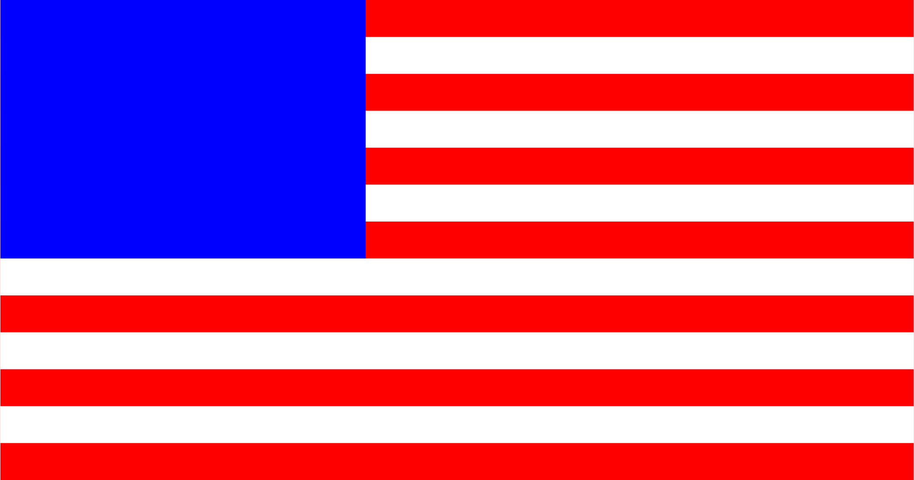

Creating the U.S. Flag¶
We start off by setting up the basic dimensions for the flag.
[10]:
stripe_width = 100
flag_height = 13 * stripe_width
flag_width = 1.9 * flag_height
print(flag_width, flag_height)
2470.0 1300
We will use these dimensions to set the drawing canvas. We begin our SVG file by creating a field of stripes:
[11]:
svg1 = """
<svg xmlns="http://www.w3.org/2000/svg" width="%d" height="%d">
""" % (flag_width, flag_height)
svg2 = """
</svg>
"""
print(svg1)
print(svg2)
<svg xmlns="http://www.w3.org/2000/svg" width="2470" height="1300">
</svg>
We will build the basic flag by creating a red rectangle on which we will draw the required white stripes as very thick lines.
[16]:
flag = """
<rect width="%d" height="%d"
style="fill:rgb(255,0,0)" />""" % (flag_width, flag_height)
print(flag)
<rect width="2470" height="1300"
style="fill:rgb(255,0,0)" />
Here is the code for a fat white line:
[19]:
line = """<line x="%d" y="%d" style="stroke:rgb(255,255,255);stroke-width:%d" />""" % (0, flag_width, stripe_width)
print(line)
<line x="0" y="2470" style="stroke:rgb(255,255,255);stroke-width:100" />
The star field is another blue rectangle:
[15]:
star_field = """
<rect width="%d" height="%d"
style="fill:rgb(0,0,255)" />
""" % (flag_height * 0.76, 7 * stripe_width)
print(star_field)
<rect width="988" height="700"
style="fill:rgb(0,0,255)" />
We now have the pieces needed to build the basic flag image (neglecting the star field for now):
[26]:
def build_flag(width, height):
svg1 = """
<svg xmlns="http://www.w3.org/2000/svg" width="%d" height="%d">
""" % (flag_width, flag_height)
svg2 = """
</svg>
"""
flag = """
<rect width="%d" height="%d"
style="fill:rgb(255,0,0)" />""" % (flag_width, flag_height)
star_field = """
<rect width="%d" height="%d"
style="fill:rgb(0,0,255)" />""" % (flag_height * 0.76, 7 * flag_height / 13)
svg = svg1
svg += " <g>"
svg += flag
x1 = 0;
x2 = width
stripe_width = height/13
y = 1.5 * stripe_width
for stripe in range(0,7):
line = """<line x1="%d" y1="%d" x2="%d" y2="%d"
style="stroke:rgb(255,255,255);stroke-width:%d" />""" % (0, y, width, y, stripe_width )
svg += line
y += 2 * stripe_width
svg += star_field
svg += " </g>"
svg += svg2
with open('_images/us-flag.svg','w') as fout:
fout.write(svg)
To see the results of calling this function, we need the show routine from the presious notebook
[32]:
def show(fname):
with open(fname) as fin:
lines = fin.readlines()
for l in lines:
print(l.rstrip())
[33]:
build_flag(flag_width, flag_height)
show('_images/us-flag.svg')
<svg xmlns="http://www.w3.org/2000/svg" width="2470" height="1300">
<g>
<rect width="2470" height="1300"
style="fill:rgb(255,0,0)" /><line x1="0" y1="150" x2="2470" y2="150"
style="stroke:rgb(255,255,255);stroke-width:100" /><line x1="0" y1="350" x2="2470" y2="350"
style="stroke:rgb(255,255,255);stroke-width:100" /><line x1="0" y1="550" x2="2470" y2="550"
style="stroke:rgb(255,255,255);stroke-width:100" /><line x1="0" y1="750" x2="2470" y2="750"
style="stroke:rgb(255,255,255);stroke-width:100" /><line x1="0" y1="950" x2="2470" y2="950"
style="stroke:rgb(255,255,255);stroke-width:100" /><line x1="0" y1="1150" x2="2470" y2="1150"
style="stroke:rgb(255,255,255);stroke-width:100" /><line x1="0" y1="1350" x2="2470" y2="1350"
style="stroke:rgb(255,255,255);stroke-width:100" />
<rect width="988" height="700"
style="fill:rgb(0,0,255)" /> </g>
</svg>
Here is the flag so far:

Building a star¶
The hardest part of generating the flag is placing all of the stars. Let;s start off by building one star.
[55]:
def star(diameter):
svg = """
<svg xmlns="http://www.w3.org/2000/svg" width="%d" height="%d">
""" % (diameter, diameter)
radius = diameter/2
x = radius
y = radius
circle = """
<circle cx="%d" cy="%d" r="%d" style="fill:none;stroke:rgb(0,0,0);stroke-width:2" />
""" % (x,y,radius)
svg += circle
svg += """</svg>"""
with open('_images/us-star.svg','w') as fout:
fout.write(svg)
star(100)
show('_images/us-star.svg')
<svg xmlns="http://www.w3.org/2000/svg" width="100" height="100">
<circle cx="50" cy="50" r="50" style="fill:none;stroke:rgb(0,0,0);stroke-width:2" />
</svg>
We should see a simple circle.
Now for the fun part. We need to calculate the points for the star. These appear at 72 degree intervals from the top. A little trig will get those points set up:
[73]:
import math
angle = 0
radius = 50
points = []
for p in range(5):
x = radius + radius * math.sin(angle * math.pi / 180.0)
y = radius - radius * math.cos(angle * math.pi / 180.0)
sx = '%.2f' % x
sy = '%.2f' % y
points.append([sx,sy])
angle += 72
print(points)
[['50.00', '0.00'], ['97.55', '34.55'], ['79.39', '90.45'], ['20.61', '90.45'], ['2.45', '34.55']]
Let’s draw a path using these points. SVG has an interesting trick we can use to create the star. If we draw a polyline using these points in the correct order, we will get the star.
the correct order is this list (starting with zero at the top):
[68]:
order = [0,2,4,1,3]
[65]:
path = """
<polygon points="
"""
%s, %s % (points[0][0], points[0][1])
for p in points:
x = p[0]
y = p[1]
path += """
%s %s""" % (x,y)
path += """ Z" style="fill:#000000" />"""
print(path)
<path d="M 50.00 0.00
L
50.00 0.00
97.55 34.55
79.39 90.45
20.61 90.45
2.45 34.55 Z" style="fill:#000000" />
[70]:
svg = """
<polygon points = "
"""
for p in order:
px = points[p][0]
py = points[p][1]
svg += " %s,%s" % (px, py)
svg += "\""
svg += """style="fill:white; rule:nonzero;" />
"""
print(svg)
<polygon points = "
50.00,0.00 79.39,90.45 2.45,34.55 97.55,34.55 20.61,90.45"style="fill:white; rule:nonzero;" />
We now have code we can use to generate a white star for placement on the star field
[79]:
def gen_star(diameter, color):
svg = """
<svg xmlns="http://www.w3.org/2000/svg" width="%d" height="%d">
""" % (diameter, diameter)
radius = diameter / 2
angle = 0
points = []
for p in range(5):
x = radius + radius * math.sin(angle * math.pi / 180.0)
y = radius - radius * math.cos(angle * math.pi / 180.0)
sx = '%.2f' % x
sy = '%.2f' % y
points.append([sx,sy])
angle += 72
order = [0,2,4,1,3]
svg += """
<polygon points = "
"""
for p in order:
px = points[p][0]
py = points[p][1]
svg += " %s,%s" % (px, py)
svg += "\""
svg += """ style="fill:%s; rule:nonzero;" />
""" % color
svg += "</svg>"
with open('_images/haffa-star.svg','w') as fout:
fout.write(svg)
Now we can display this star
[80]:
gen_star(100, "red")
[81]:
show('_images/haffa-star.svg')
<svg xmlns="http://www.w3.org/2000/svg" width="100" height="100">
<polygon points = "
50.00,0.00 79.39,90.45 2.45,34.55 97.55,34.55 20.61,90.45" style="fill:red; rule:nonzero;" />
</svg>
And, here is the test star.
The challenge now is to place these stars on the blue star field. SOunds like a job for a loop. Unfortunately, SVG does not support loops, so we need to resort to trickery to display all the needed stars properly.
The use tag lets us use a path we have defined with an identifier. Let’s try an experiment with this feature
[ ]:
svg = """
<svg xmlns="http://www.w3.org/2000/svg" width="700" height="700">
<use xlink:href="_images/haffa-star.svg" />
</svg>
"""